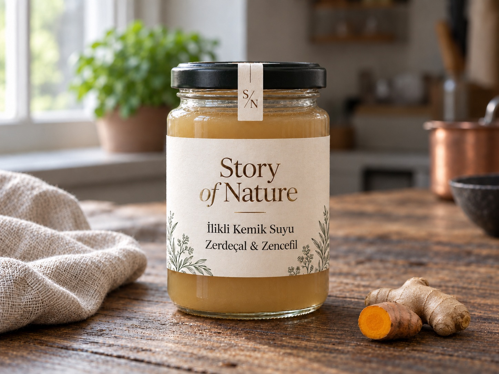
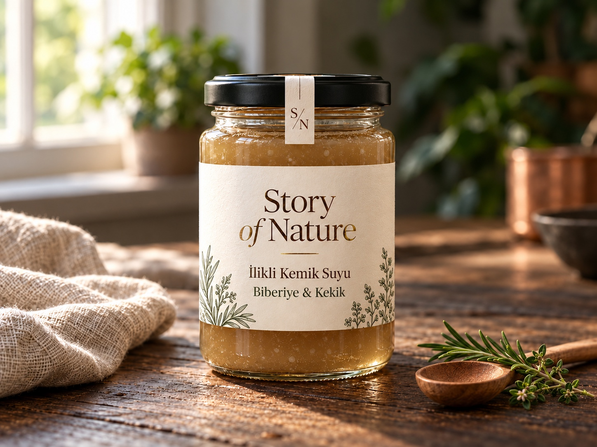
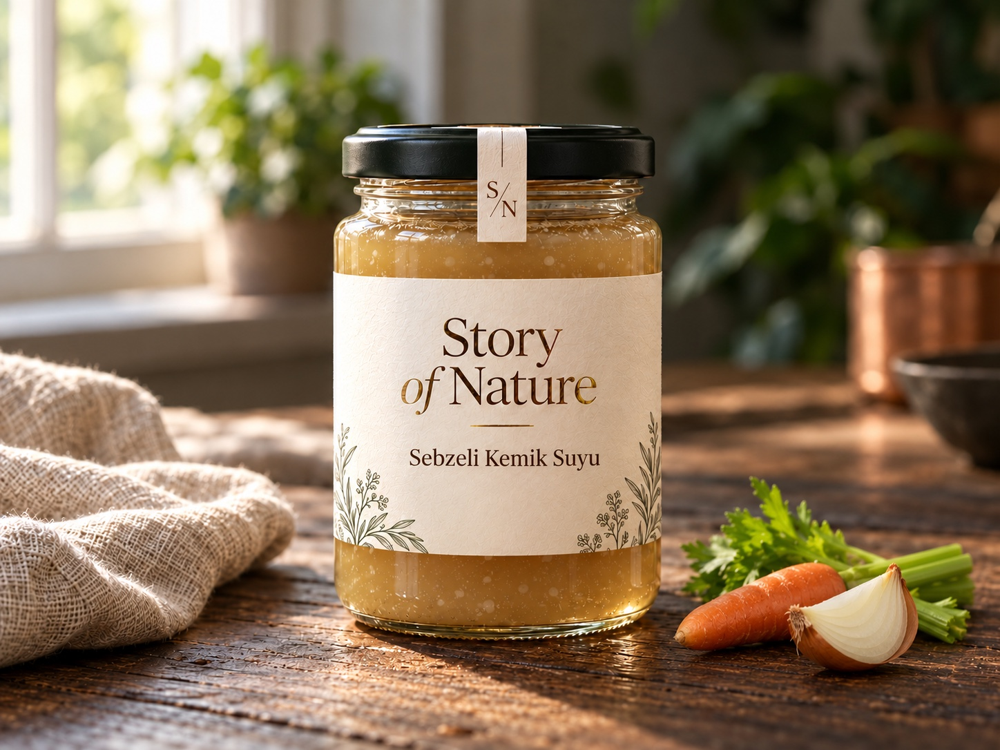
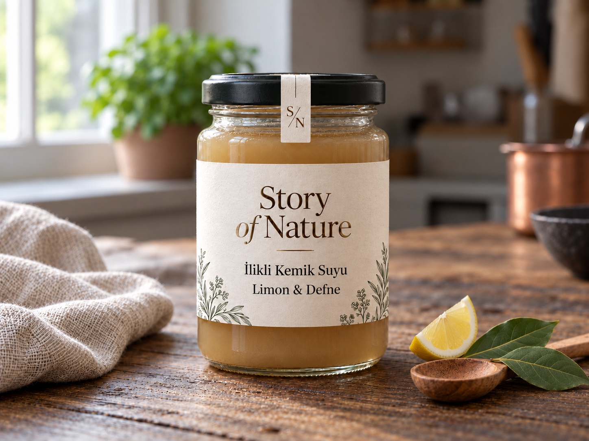

01 / İlikli Kemik Suları
Sade · Pure Essence
Kemik suyunun kendi karakterini öne çıkaran yalın lezzet yönü.
- Lezzet profili
- Dengeli, et suyu karakterinde
- Sunum fikri
- Çorba, pilav ve günlük mutfak tarifleri
Yaklaşık 249 TL / 300 ml
Görseller temsili sunumdur; ambalaj, renk ve kıvam gerçek üründe farklı olabilir.
01 / İLİKLİ KEMİK SUYU
Sade tariften kök baharatlara, Akdeniz otlarından limon ve defneye uzanan beş geleneksel seçenek.
Kemik suyunun kendi karakterini öne çıkaran yalın lezzet yönü.
Fiyat belirtilen gramaj için yaklaşık tutardır. Nihai fiyat, içerik, alerjen ve teslimat teklif sırasında teyit edilir.
BU BAŞLIKTAKİ 5 FARKLI ÜRÜN SAYFASI
Fincanda sıcak sunum, çorba, pilav ve tencere yemekleri.
01 / İlikli Kemik Suları
Kemik suyunun kendi karakterini öne çıkaran yalın lezzet yönü.
Yaklaşık 249 TL / 300 ml

02 / İlikli Kemik Suları
Kök baharatların sıcak ve hafif keskin karakteri.
Yaklaşık 279 TL / 300 ml

03 / İlikli Kemik Suları
Akdeniz otlarının aromatik dokunuşu.
Yaklaşık 279 TL / 300 ml

04 / İlikli Kemik Suları
Sebze notalarının eşlik ettiği ilikli kemik suyu seçeneği.
Yaklaşık 269 TL / 300 ml

05 / İlikli Kemik Suları
Limonun ferah notası ve defnenin otsu karakteri.
Yaklaşık 269 TL / 300 ml